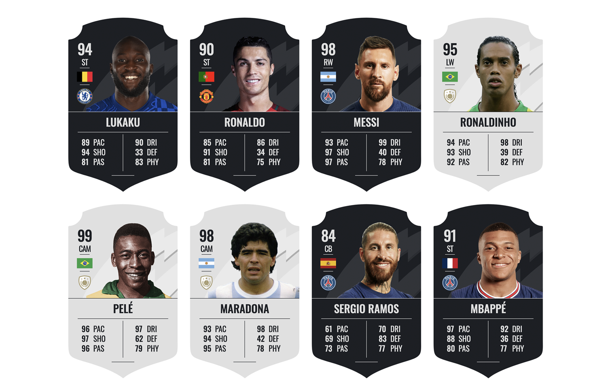

FIFA Cards
Legends Clubs es una aplicación web que muestra las tarjetas FIFA de los jugadores de fútbol. Los datos de los jugadores se han extraído de un archivo data.json. El diseño de las tarjetas se creó con Figma, Photoshop e Illustrator. La aplicación web permite a los usuarios explorar las estadísticas y detalles de diferentes jugadores de fútbol de una manera divertida e interactiva.
Características
 Tarjetas
FIFA interactivas que muestran estadísticas y detalles de los jugadores.
Tarjetas
FIFA interactivas que muestran estadísticas y detalles de los jugadores.-
Diferentes estilos de cartas para jugadores leyenda, distinguidos por la clase "Plata".
-
User-friendly interface for easy navigation and exploration of player data.
Tecnologías
- HTML
- CSS
- JavaScript
- Fragment y
Template